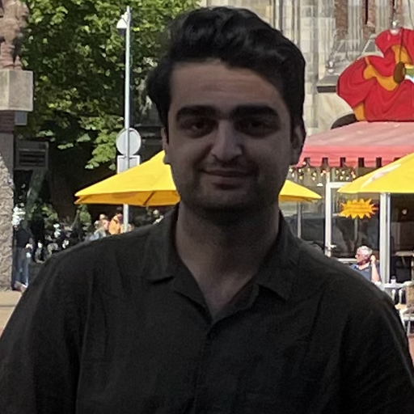

Muhammed Abdulrhman
Informations
- Email adress: Sher@gmail.com
- Phone: 06-48871803
Hobbies
- Reading
- Chess
- Music
- Video games
- Movies
About me
I am from Syria. I am kurdish and was born in the city Kobani, but grew up in Aleppo. I currently live in Groningen. I have been living in Netherland for about 20 months.
My passion lays in many things, but currently i am completly hooked with programing.
There is something about it that drives me to learn more and dive deeper into this unique world. I think it might be that feeling of making something from nothing.
Like bulding your own website amd having the total freedom of doing whatever you wish with it.
Education
- Iskenderun school in Aleppo
- Studied to high school but could not finish it because of the unfortunate circumstances
Work Esperience
- Worked at McDonald's as a service crew